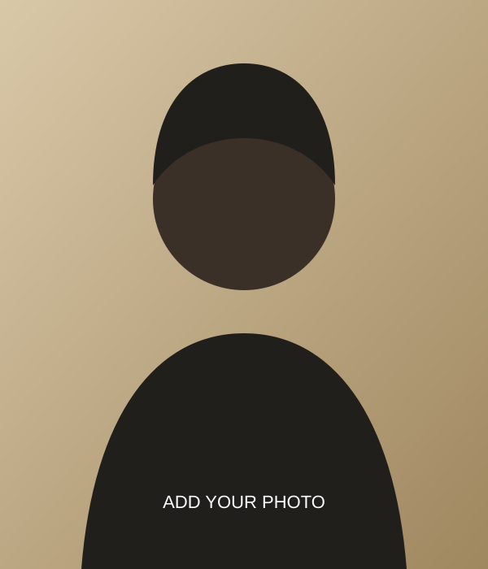

I enjoy learning how digital tools work.
STUDENT • TECHNOLOGY ENTHUSIAST
Hello, I'm Olusola Emmanuel Temitope.
Welcome to my academic portfolio — a space where I share my learning journey, skills, projects and goals in technology.

Replace with your photographA LITTLE ABOUT ME
Learning today. Building tomorrow.
I am a student of MIVA Open University with an interest in technology and continuous learning. My background in Food Technology has helped me develop discipline, practical thinking and attention to detail. I am building my digital skills and exploring areas such as web development and cybersecurity.
I practise new skills and learn from feedback.
I want to use technology to solve useful problems.
LET'S CONNECT